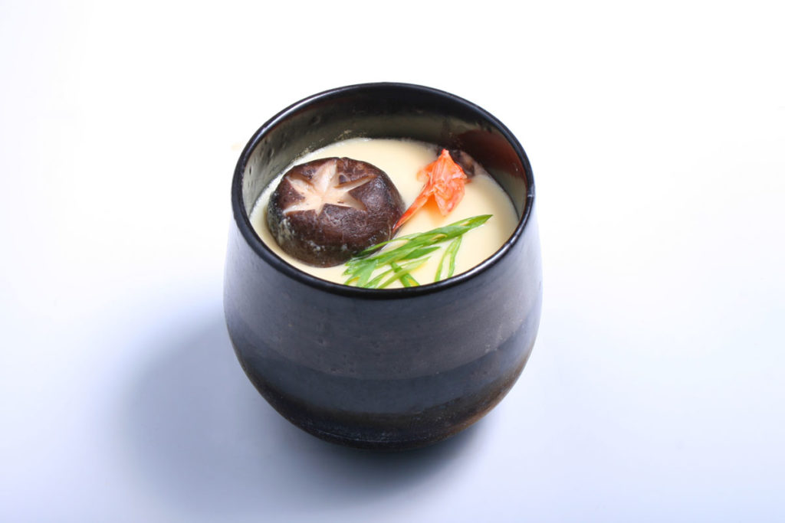

Chawanmushi

Disclaimer: This recipe was taken from Thanks For the Meal for the sole purpose of this learning experiment. All credits to the owner!
Soft and Silky
Chawanmushi is a great comfort food, and it helps that it's really easy to make.
You can be flexible with the bonus ingredients as well - in fact, this dish is great even on its own!
Ingredients
- Chicken breast meat x 85g (deboned and skinned)
- Sake x 1tbsp
- Soy sauce x 2tbsp
- Eggs x 4
- Cold dashi x 2.5cups
- Mirin x 2tsp
- Shiitake mushrooms x 2 (halved)
- Kamaboko x 4 thin slices
Steps
- Cut the chicken into eight pieces and marinate for 15 minutes in the sake and 1 tbsp of soy sauce. Drain.
- Beat the eggs and add the dashi, remaining soy sauce, mirin, and salt. Strain through cheesecloth or a fine sieve. Try to avoid making bubbles.
- Distribute marinated chicken, mushrooms, and fishcake among four custard cups (or ramekins).
Pour the strained egg-dashi mixture over it until the custard cups are almost full.
If there are any bubbles, prick them with a toothpick.
- Preheat a steamer. Cover the cups with plastic wrap and steam for 15-20 minutes over medium heat.
Check doneness by sticking a toothpick through the center; if egg sticks to the toothpick, continue steaming for a few more minutes.
The top of the custard should be smooth and jiggle slightly if touched.
- When done, remove the plastic wrap and serve.